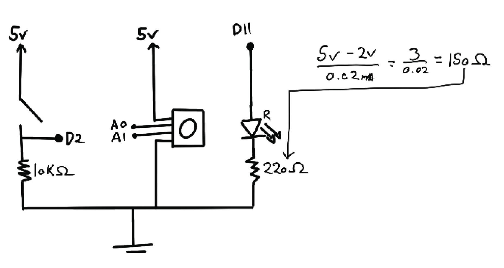
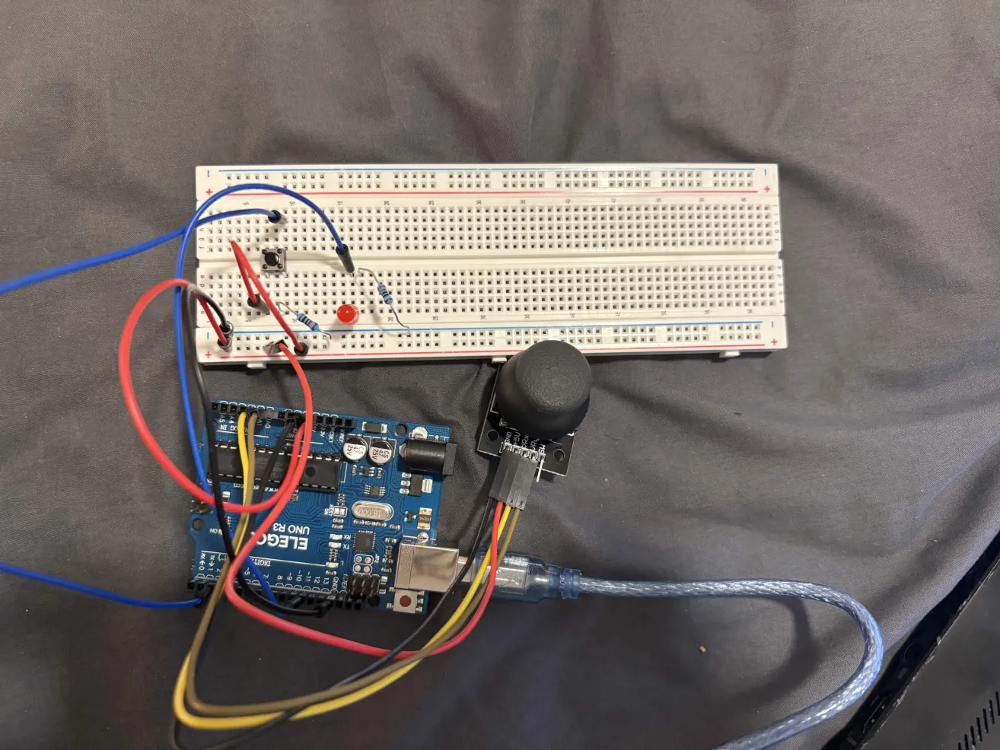

This page documents Assignment 6. The goal of this assignment was to create a webpage that communicates with an Arduino using WebSerial. The joystick and button connected to the Arduino send real-time input data to the webpage, while the webpage sends output commands back to the Arduino to control an LED. The project demonstrates interactive control between the digital interface and physical hardware.

This schematic shows the Arduino connected to a two-axis joystick (analog inputs A0 and A1), a button (digital input), and an LED connected to a digital output pin. The joystick provides two analog input values (0–1023),while the button provides a digital signal. The LED receives output commands sent from the webpage.

This image shows the physical implementation of the circuit.
The firmware reads joystick and button input values and sends them to the webpage in CSV format over serial communication. It also listens for incoming commands from the webpage to toggle the LED on or off.
// Store pin used for joystick X-axis
const int xAxis = A1;
// Store pin used for joystick Y-axis
const int yAxis = A0;
// Store pin used for LED
const int LED = 11;
// Store pin used for button
const int buttonPin = 2;
void setup() {
// Start serial communication at 9600
Serial.begin(9600);
// Configure LED pin as an output
pinMode(LED, OUTPUT);
// Configure button pin as input with internal pull-up resistor
pinMode(buttonPin, INPUT_PULLUP);
}
// Main loop runs continuously
void loop() {
// Read joystick X-axis value
int xVal = analogRead(xAxis);
// Read joystick Y-axis value
int yVal = analogRead(yAxis);
// Read button state
int buttonState = digitalRead(buttonPin);
// Send X value to webpage
Serial.print(xVal);
// Send comma separator
Serial.print(",");
// Send Y value to webpage
Serial.print(yVal);
// Send comma separator
Serial.print(",");
// Send button state and end line
Serial.println(buttonState);
// Check if webpage has sent data to Arduino
if (Serial.available() > 0) {
// Read incoming character from serial buffer
char ledState = Serial.read();
// If webpage sends '1', turn LED on
if (ledState == '1') {
digitalWrite(LED, HIGH);
}
// If webpage sends '0', turn LED off
else if (ledState == '0') {
digitalWrite(LED, LOW);
}
}
// Small delay to stabilize serial communication
delay(20);
}
The webpage uses p5.js and WebSerial to receive joystick and button data from the Arduino. The joystick controls the position of a black circle on screen, while the Arduino pushbutton cycles through red, blue, and green background colors. Mouse clicks on the webpage send commands back to the Arduino to toggle the LED.
// Store baud rate to match Arduino sketch
const BAUD_RATE = 9600;
// Create variable to store serial object
let serial;
// Create variable for connect button
let portButton;
// Store joystick-controlled position
let xPos = 200;
let yPos = 200;
// Store latest button state from Arduino
let buttonState = 1;
// Store previous button state to detect press event
let lastButtonState = 1;
// Track LED state being sent to Arduino
let ledOn = false;
// Track which background color is active
let colorMode = 0;
// Runs once at program start
function setup() {
// Create canvas that fills entire browser window
createCanvas(windowWidth, windowHeight);
// Initialize WebSerial
serial = createSerial();
// Create connect button
portButton = createButton('Connect Arduino');
// Position connect button near top-left corner
portButton.position(20, 20);
// Run connect function when button pressed
portButton.mousePressed(connectPort);
}
// Runs continuously
function draw() {
// Set background color based on colorMode value
if (colorMode == 0) {
background('red');
}
else if (colorMode == 1) {
background('blue');
}
else {
background('green');
}
// Check if serial data is available
if (serial.available() > 0) {
// Read one full line from serial buffer
let data = serial.readUntil('\n');
// Print raw data for debugging
console.log(data);
// If data exists
if (data) {
// Split CSV string into array
let sensors = split(trim(data), ',');
// Confirm we received x, y, and button
if (sensors.length == 3) {
// Map joystick X value (0–1023) to full window width
xPos = map(int(sensors[0]), 0, 1023, width, 0);
// Map joystick Y value (0–1023) to full window height
yPos = map(int(sensors[1]), 0, 1023, height, 0);
// Store button state (0 when pressed)
buttonState = int(sensors[2]);
// Detect button press transition (HIGH → LOW)
if (lastButtonState == 1 && buttonState == 0) {
// Cycle to next background color
colorMode++;
// Keep colorMode within 0–2 range
if (colorMode > 2) {
colorMode = 0;
}
}
// Update last button state
lastButtonState = buttonState;
}
}
}
// Draw black circle controlled by joystick
fill(0);
ellipse(xPos, yPos, 30, 30);
}
// Sends LED control to Arduino
function mousePressed() {
// Toggle LED state
ledOn = !ledOn;
// If LED should turn on
if (ledOn) {
// Send character '1' to Arduino
serial.write('1');
} else {
// Send character '0' to Arduino
serial.write('0');
}
}
// Connect to Arduino through WebSerial
function connectPort() {
// If serial is not already open
if (!serial.opened()) {
// Open serial connection at matching baud rate
serial.open(BAUD_RATE);
// Hide connect button once connected
portButton.hide();
}
}

This animation demonstrates the system in action. Moving the joystick changes the position of the circle on screen. Pressing the Arduino button cycles the background color. Clicking the webpage toggles the LED connected to the Arduino.